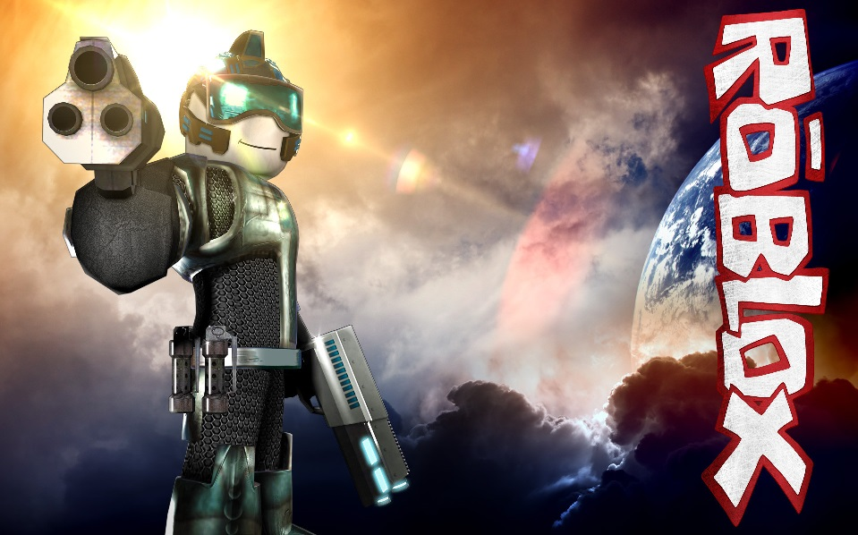
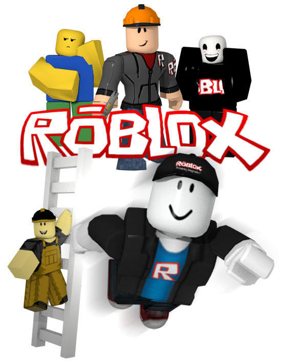
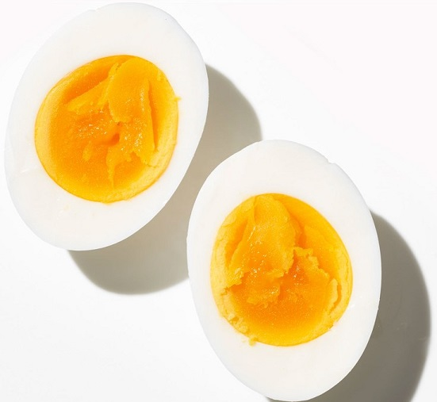

Welcome to my profile!
"
I call her name
Across an endless plain
She'll answer me
Where ever she may be"
Who is she - I, Monster
I like to ride my bike!
(this isn't my bike; this is just kinda what it looks like)
I also really like to play ROBLOX!
 Eggs are a super awesome food. They're good with just about anything, and by themselves! They're a great breakfast, lunch, and dinner!
I go to Old Colony RVTHS, and so far it's been awesome here! I really like the people here because everyone is just super nice, and I've made a lot of friends and met a lot of people that I never would have met if I didn't come here. Plus, I really love shop! I go to the computer science shop, which was my first choice, and I really enjoy it here! Both of my teachers are super awesome and I have a lot of fun on all my projects and I'm super happy when I'm in shop. I'm good with computers and I really like being able to help out my classmates (...shopmates?) when they're having trouble.